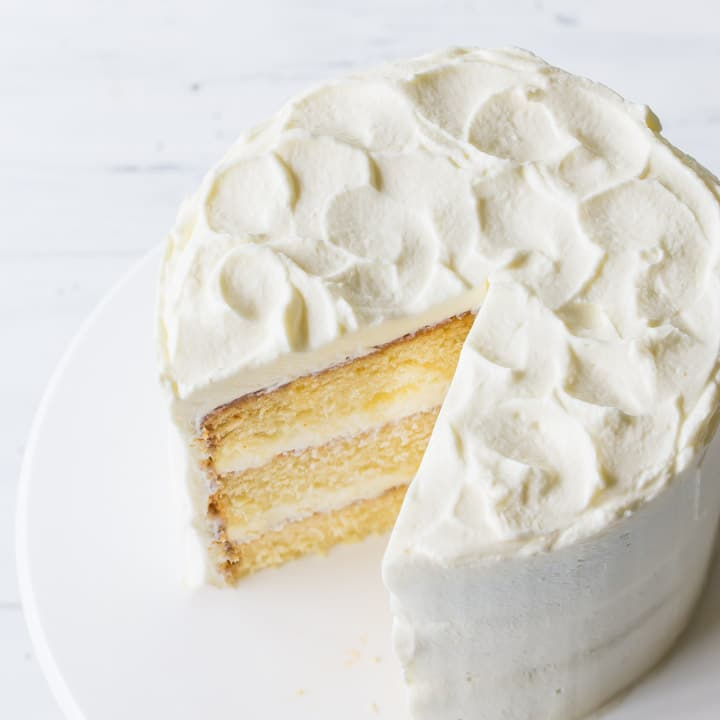

How to bake a Cake

The Vanilla Cake is cake soft and creamy and moist due to its ingredients.
It is actually just refers to the flavor of a vanilla (aka the
classic French way of making ice cream from cream and egg yolks).
This cake is more popular for teenagers because of the light texture.
The vanilla cake is very rich of flavor other than cakes.
The vanilla cake will melt to your mouth due to its softness.
Ingredients
- 3/4 cup unsalted butter, room temperature
- 3/4 cup unsweetened cocoa powder
- 3/4 cup flour
- 1/4 teaspoon salt
- 1/2 teaspoon baking powder
- 1 cup sugar
- 3 eggs
- 1 teaspoon vanilla extract
- 1/2 cup buttermilk or sour cream
Procedures
- Preheat the oven to 350 °F (177 °C).
- Grease your cake pan
- Mix the wet ingredients in a large bowl
- Mix the dry ingredients in a separate bowl
- Add the dry mixture to the wet mixture
- Pour the batter into the cake pan
- Put the pan in the oven and bake the cake for 30 minutes
- Take the cake from the oven and let it cool
- Invert the cake onto a plate
- Let the cake cool completely before frosting
- Enjoy!